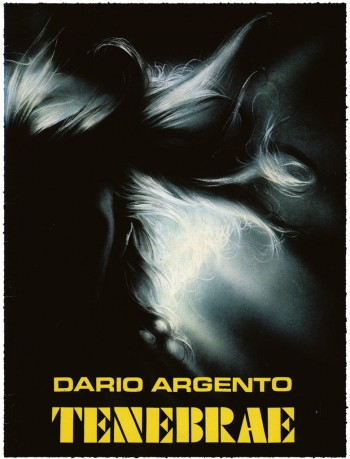

#7677 Tenebre - Der kalte Hauch des Todes
Alternativ: Tenebre
 
 IMDB-Wertung: 7.2 / 10
IMDB-Wertung: 7.2 / 10  Metascore: 0
Metascore: 0 
Der amerikanische Bestsellerautor Peter Neal kommt nach Rom um sein neuestes Buch Tenebre zu promoten. Noch während seiner Ankunft wird in Rom eine junge Ladendiebin, die sein Buch geklaut hatte, bestialisch ermordet - auf eine Weise, wie sie im Buch beschrieben ist: in ihren Mund steckt der Mörder Seiten aus dem Buch. Kurz darauf erhält Neal Drohbriefe, die mit Zitaten aus seinem Buch versehen sind. Damit nicht genug, schlägt der Mörder ein weiteres Mal zu. Diesmal sind die Opfer zwei Lesben. Auch an diesem Tatort werden Seiten aus Tenebre gefunden. Die Polizei sucht nach einem Zusammenhang mit dem beliebten Autor, dieser hält das Ganze noch für einen Zufall. Doch als es zu neuen Opfern kommt und er selbst in den Fokus des irren Killers rückt, ändert sich seine Einstellung. Zusammen mit seiner Assistentin versucht er, dem tödlichen Treiben auf die Spur zu kommen und gerät dabei sehr schnell selbst in erhebliche Gefahr.
Jahr: 1982
Dauer: 101 Minuten
FSK: BPjM Restricted
Land: Italien Studio: Ascot Elite Home EntertainmentTonspuren: DD2.0 - ,
Untertitel: Deutsch,
Auflösung: 1080p (1920x1040) Größe: 6348 MB
Genre: Thriller, Horror, Mystery
Regisseur:  Dario Argento
Dario Argento
Drehbuch: Dario Argento
Soundtrack:
Darsteller:
 Anthony Franciosa als Peter Neal
Anthony Franciosa als Peter Neal- Christian Borromeo als Gianni
- Mirella D'Angelo als Tilde
- Veronica Lario als Jane McKerrow
- Ania Pieroni als Elsa Manni
- Eva Robins als Girl on Beach
- John Steiner als Christiano Berti
- Lara Wendel als Maria Alboretto
 John Saxon als Bullmer
John Saxon als Bullmer Daria Nicolodi als Anne
Daria Nicolodi als Anne Giuliano Gemma als Detective Germani
Giuliano Gemma als Detective Germani- Ennio Girolami als Department Store Manager
- Francesca Viscardi als
- Lamberto Bava als Elevator Repairman #1 , uncredited
- David Graham als Det. Germani , uncredited
- Adrienne Posta als Various , uncredited
 Theresa Russell als Anne , uncredited
Theresa Russell als Anne , uncredited Michele Soavi als Maria's Boyfriend / Man Walking with Girl on Beach , uncredited
Michele Soavi als Maria's Boyfriend / Man Walking with Girl on Beach , uncredited- Carola Stagnaro als Detective Altieri
- Isabella Amadeo als Bullmer's secretary
- Mirella Banti als Marion
- Monica Maisani als
 Marino Masé als John
Marino Masé als John Fulvio Mingozzi als Alboretto, the porter
Fulvio Mingozzi als Alboretto, the porter- Gianpaolo Saccarola als Coroner
- Ippolita Santarelli als Prostitute
Datei: X:\FSK18-Collections\Dario Argento\Tenebre - Der kalte Hauch des Todes (1982, FSKBPjM Restricted, 1920x1040).mkv seit 30.11.2017
Festplatte: FSK18
 Es gibt insgesamt 10 Filme in der Gruppe 'FSK18-Collections\Dario Argento'
Es gibt insgesamt 10 Filme in der Gruppe 'FSK18-Collections\Dario Argento'